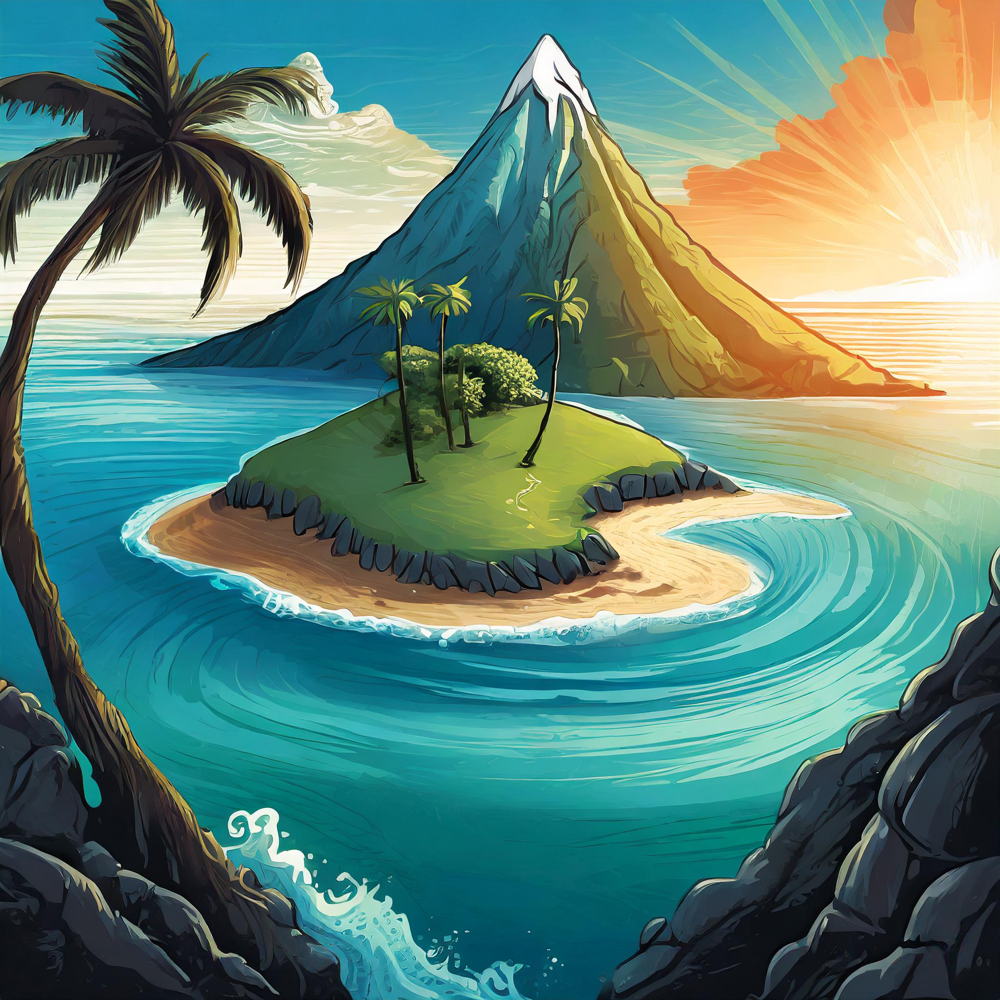

¡Conocenos!
Somos Guadalupe López y Agustina Micheli, estudiantes de primer año. Tenemos 19 y 18 años, y nos anotamos a esta carrera porque nos llamo la atencíon la variedad de cosas que incluia, y además la salida laboral.
Proceso de producción
Nuestro proyecto surgió a partir de la consigna dada por el profesor, elegir un cuento de Julio Cortazar. Por lo tanto empezamos la busqueda sobre todos los cuentos del autor, hasta que encontramos el indicado, "La isla a mediodía". Este cuento lo elegimos porque tenia un final inesperado y con diferentes puntos de vista, lo que nos ayudo para pensar los otros final alternativos.
Como hicimos la historia
Arrancamos buscando el cuento para poder resumirlo, dividirlo y poder realizar el diagrama de flujo. También en ese momento creamos dos finales alternativos. Luego, cuando comenzamos a programar, hicimos las imagenes con ayuda de Adobe IA. En el proceso de programar organizamos cada texto con su respectiva imagen e incluimos botones para la interacción, logrando asi un "Elige tu propia historia".
Como hicimos el juego
Para crear el juego nos guiamos con el final original de la historia. Primero creamos un boceto de la idea y planteamos las instrucciones y su contenido. Luego en la programación definimos todo por pestañas: el avión como personaje principal y los obstaculos (pajaro,palmera,piedra) como sus enemigos. Tuvimos algunas dificulades a la hora de realizar el trabajo, como por ejemplo que las colisiones sean exactas con la forma del enemigo y que los obstaculos se reinicien sin superponerse. A pesar de todo esto pudimos lograr un juego divertido y quedar conformes con el resultado.
Acerca de la historia
Marini es un asistente de vuelo que, durante sus trayectos, se obsesiona con una isla solitaria en el mar Egeo, visible solo brevemente desde su ventanilla. Cada vez que pasa sobre ella, siente una extraña conexión, aunque la isla es pequeña, deshabitada, y sin un propósito claro en su vida. A pesar de sus pensamientos recurrentes, Marini se distrae con otras ocupaciones, como su relación con Carla y varias aventuras pasajeras en diferentes ciudades, especialmente en Roma y Beirut. Sin embargo, la isla sigue en su mente.
Finalmente, Marini decide viajar a la isla, llamada Xiros, y una vez allí, se siente absorbido por su soledad y belleza natural. Decide quedarse, integrado con los pocos habitantes locales, viviendo de la pesca. No obstante, a pesar de su aparente satisfacción, algo dentro de él sigue siendo inquietante. En un momento, mientras reflexiona sobre su nueva vida en la isla, un avión pasa por encima y se estrella en el mar cerca de la costa. Marini rescata a un sobreviviente, pero este muere debido a sus heridas, lo que marca un giro fatal en su aventura. La muerte del hombre en la playa se convierte en un recordatorio de que la isla y sus pensamientos son, en última instancia, una ilusión, y Marini no puede escapar de su propia realidad.
